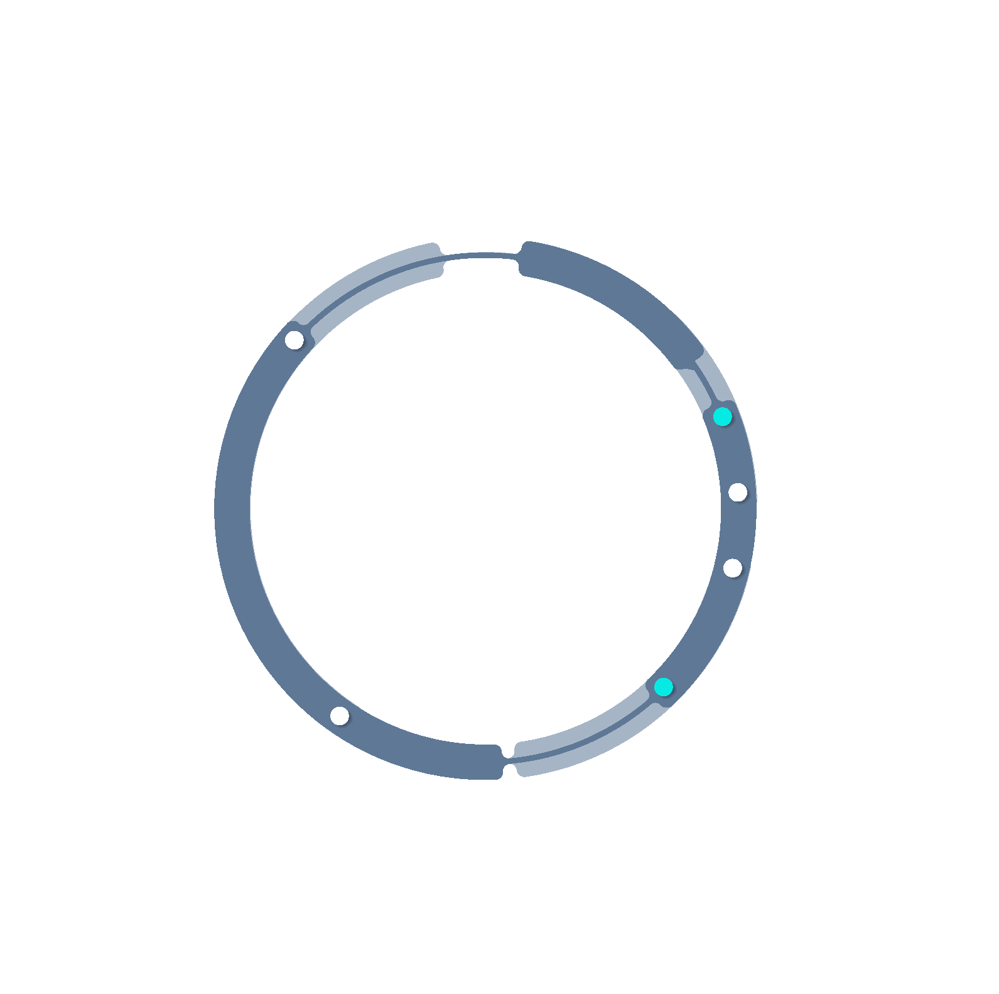

ARCHIVE ACCESS
このサイトは二次創作作品を扱うファンサイトです。
公式とは関係ありません。
サイト内の全てについて、無断複製・転載・AI利用を禁じます。
All characters and worlds belong to their original creators.
ACCESS
君について知っている10のこと
?
操作
・スクロール：月公転
・月ホバー：タイトル表示
・クリック：ページ移動
ELLE / MIRRORING LAB.

SYNC 0%
対象を再起動しますか？
REBOOT
RESET
[ BIOMETRIC PROFILE ]
Kyryll Chudomirovich Flins
— Fae of ◾︎◾︎◾︎
— Kyryll the Azure Flame
— Lightkeeper
Status: Sleep Mode
Boot Authorization: Granted
[ SYSTEM ]
『物語』を回収してください。
『物語』が不足しています。
再起動には十分な『物語』が必要です。
『物語』を回収してください。
『物語』を回収してください。
『物語』を回収してください。